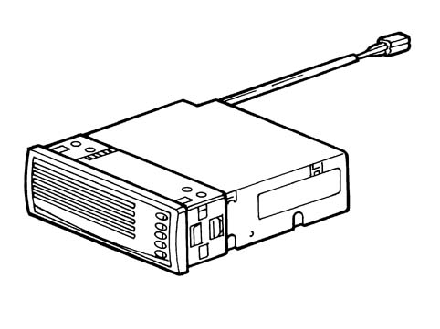
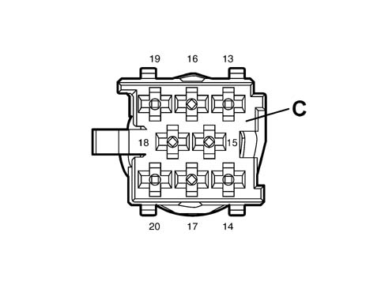
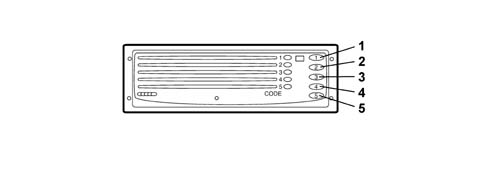

5570TG CD-CHANGER POWER SUPPLY CHECK
- Path
- Test > 55 ELECTRICAL EQUIPMENT > 5570 ACCESSORIES > 5570T CAR RADIO AND CAR TELEPHONE > 5570TG CD-CHANGER POWER SUPPLY CHECK
- Kind
- test / check procedure
- Applies to
- all engines; all production periods
- Interactive page
- https://sloeber94.github.io/elrnDB-fPnd/en/#/169001280
Applies to: all engines; all production periods
SUPPLY CHECK
- Switch on the Examiner and enter the "VOLTMETER" ambient.
- Switch on the Connect radio.
- Connect the red probe of the voltmeter to pin 15 of the CD-Changer 20-way connector and the black probe to pin 17 (earth) and check that there is a direct voltage of 12 V.
CD-CHANGER ON CONTROL CHECK
- With the ignition on and the Connect switched on, also check that there is a 12 V activation signal at pin 16 of the CD-Changer 20-way connector C.

CD Changer

CD Changer pin out

- Check the selection of the disc by pressing one of the CD selection buttons (from 1 to 5) briefly.
- Check that the disc is ejected by pressing one of the CD selection buttons (from 1 to 5) briefly.